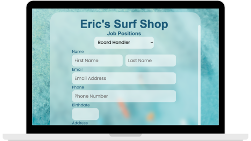
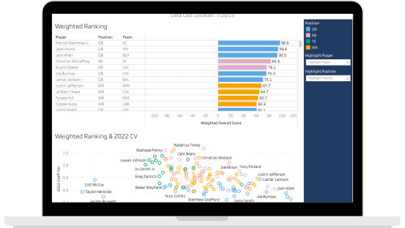
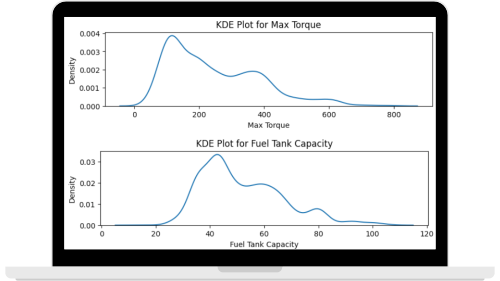

Salesforce application that intakes user information through a Visualforce web page and performs automated actions using Flows

Fantasy football drafting analysis for 2023 season incorporating VORP, VOLS, and Variance with dashboard, visualizations, and explanations of insights

Using a dataset about cars, pre-processing techniques (one-hot encoding, mapping, filling NA values) are used to train and evaluate different types of regression models
This website! Created using HTML and CSS. This is the first iteration and I hope to improve upon it.